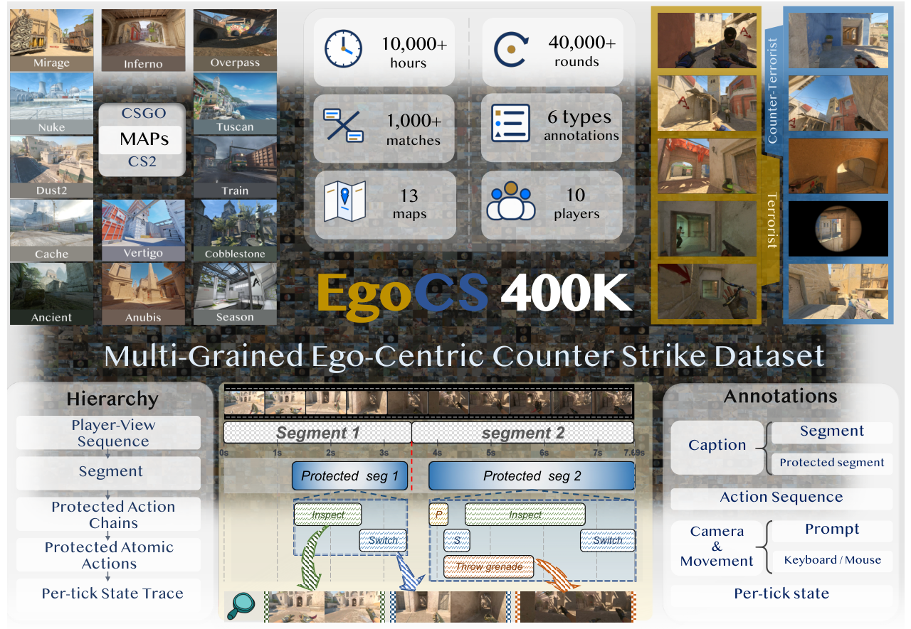
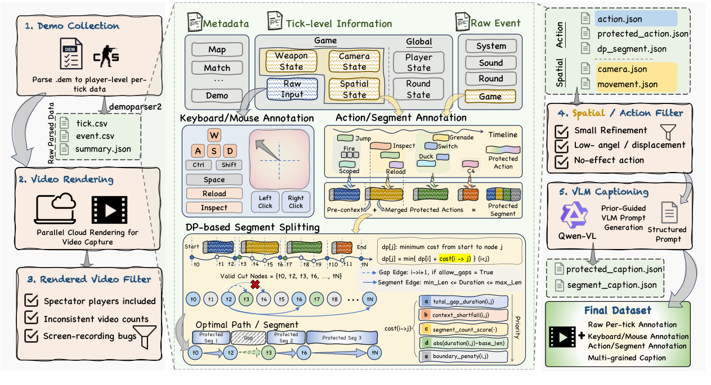
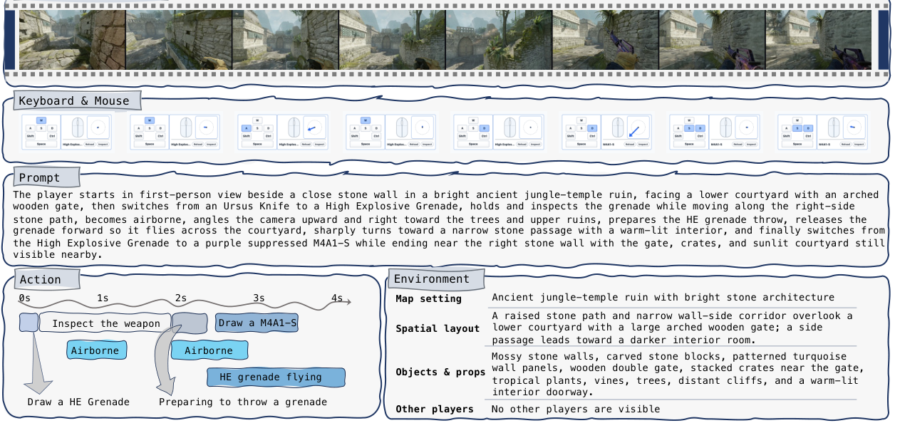

First-person observations
Clean rendered videos from 10 player viewpoints per round.
Replay-grounded egocentric gameplay data
City University of Hong Kong
EgoCS-400K pairs clean first-person Counter-Strike gameplay videos with temporally aligned actions, keyboard and mouse signals, camera motion, player states, game events, captions, and prompts. The dataset is built from public professional CS:GO and CS2 demos, making each video segment traceable back to the replay timeline that generated it.
Dataset at a glance
The release organizes professional match replays into first-person player-view videos, protected action chains, action-safe segments, and per-tick state traces.
Inspect synchronized frames, actions, prompts, keyboard and mouse traces, and temporal segments in the interactive Hugging Face Space.
Overview
Counter-Strike demos preserve executable human gameplay trajectories. EgoCS-400K uses this replay structure to align rendered first-person observations with controls, camera movement, states, events, and language supervision.
Clean rendered videos from 10 player viewpoints per round.
Keyboard, mouse, weapon, movement, utility, and event signals.
Player sequences, DP-selected segments, protected chains, and atomic actions.
Segment and protected-chain captions constrained by replay-derived facts.

Construction pipeline
The pipeline collects public professional match demos, renders first-person videos, filters invalid captures, parses per-tick signals, builds protected action segments, and generates prior-guided captions.

Annotation schema
Qualitative example
A four-second segment can expose sampled first-person frames, keyboard and mouse traces, action intervals, environment descriptions, and a video-generation prompt aligned to the same replay-derived timeline.

Citation
Please cite the project if EgoCS-400K is useful for your research.
@misc{guo2026egocs400k,
title={EgoCS-400K: An Egocentric Gameplay Dataset for World Models},
author={Guo, Rongjin and Liang, Dong and Liu, Yuhao and Liu, Fang and Huang, Tianyu and Hancke, Gerhard P. and Lau, Rynson W. H.},
year={2026},
note={Project page: https://EgoCS-400K.github.io}
}Contact
Contact Yuhao LIU at yuhaoliu7456@gmail.com.